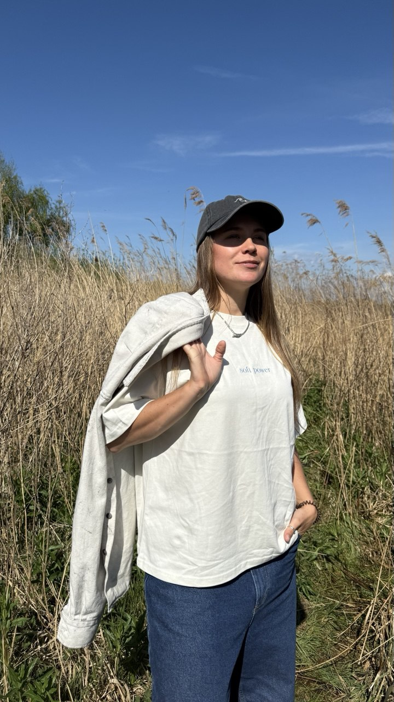

работать со мной
работать со мной
я умею превращать идею в живой опыт: придумать концепцию, собрать и возглавить команду, выстроить стратегию, визуальный язык и продвижение — и провести человека через глубокий опыт так, чтобы он его запомнил и вернулся снова.
центр спорта и культуры nike: от этапа проектирования до международного продакшена.
иммерсивный балетный проект для банка бкс.
команда 50+ человек, больше 10 залов и филиалов в москве.


от первого шага до последнего.
посмотреть и вдохновиться →концепция, программа, команда, площадка, атмосфера, продвижение. вы получаете готовый опыт, который люди заберут с собой и никогда не забудут.
программы для команд, стартапов и корпораций: не «йога в переговорке», а спроектированный опыт, который реально меняет состояние людей.
для wellbeing-проектов, студий и экспертов: как превратить ремесло в продукт, выстроить бренд и расти.
говорю про архитектуру опыта, wellbeing как систему и мягкую силу в лидерстве.
особенно международного, на стыке wellbeing, биохакинга, телесных практик, longevity и ai — давайте поговорим. я открыта к новым проектам и с радостью стану частью чего-то большего.
написать в telegramя работаю с йога-тичерами, тренерами и специалистами помогающих профессий, которые хотят не просто делиться знанием, а создать живой, настоящий продукт — упакованный в чёткую форму и наполненный своим смыслом.
в моём поле безопасно и комфортно расти
я умею слышать, видеть суть, собирать разрозненное в целое и помогать вырастить ремесло в устойчивый бизнес
120 минут
интенсивный формат для конкретного запроса.
если нужно увидеть ситуацию ясно, найти решение,
сделать выбор или получить структурную обратную связь.
75–90 минут каждая
глубокая работа с вашим запросом и связанными с ним процессами.
подходит, если хочется не просто решить задачу,
но и переосмыслить подход, найти новые опоры и собрать стратегию.
75–90 минут каждая
пространство для тех, кто хочет серьёзно взяться за дело:
увидеть, как работает их система, переупаковать знания,
настроить продвижение и обрести устойчивость.
мы работаем на пересечении стратегии, смыслов и глубокой внутренней работы.
3–12 месяцев
долгосрочное, тёплое и устойчивое сопровождение
с гибкой программой под ваш ритм, цели и стадии развития.
детали и стоимость обсуждаются лично.
«консультация с Дашей помогла мне навести порядок в текущих предложениях моего йога-бизнеса, а также наметить следующие шаги. неожиданно для себя я увидела, как многое уже удалось реализовать, а также получила ценный фидбэк по тем направлениям, где есть потенциал для роста. благодаря редкому сочетанию глубокого понимания йоги, бизнеса и профессионального опыта в маркетинге, Даша создает поддержку, которая вселяет уверенность и помогает выстраивать устойчивый бизнес, по-настоящему значимым на личном уровне.»
«очень классная сессия — структурно, глубоко, с заботой. мы за короткое время разложили всё по полочкам: от сути замысла до первых шагов продвижения. при этом всё было очень по-человечески: тепло, поддерживающе, без давления. много внимания тому, что действительно хочу я (тут вообще разрыв шаблона). чувствую опору и ясность, чего давно не хватало. спасибо тебе большое!»
«консультация с Дашей очень помогла тем, что показала какой новый рабочий формат онлайн практик можно сделать, как это структурировать и упаковать так, чтобы получился настоящий йога-клуб дома и людям бы захотелось приходить и продлевать участие.»
проекты, которые хочется прожить и запомнить, а не просто посетить.
я по образованию маркетолог и верю в силу продуманного маркетинга — который продаёт не воронками, а через архитектуру опыта: так, что людям самим захочется вернуться.
если у тебя есть идея, задача или ощущение «нам нужен человек, который соберёт это целиком» — напиши мне.
написать в telegram